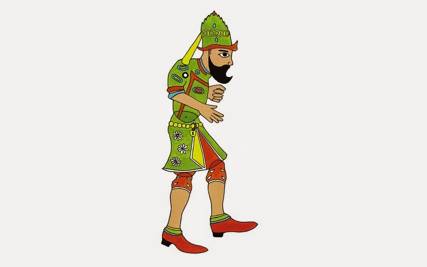
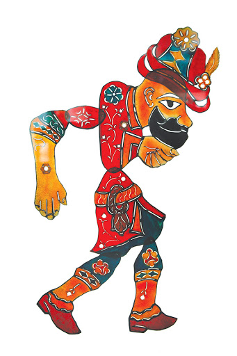
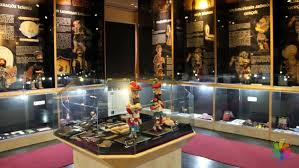

Bir rivayete göre Hacı İvaz Ağa ya da halka mal olan adıyla Hacivat ve Trakya'da bulunan Samakol köyünden demirci ustası Karagöz, Orhan Gazi devrinde Bursa'da yaşamış cami yapımında çalışan iki işçidir. Kendileri çalışmadıkları gibi diğer işçilerin de çalışmasını engellemektedirler. Orhan Gazi'nin, "cami vaktinde bitmezse kelleni alırım" dediği cami mimarı, caminin vaktinde bitmemesine Karagöz ve Hacivat'ın neden olduğunu söyler. Bunun üzerine bu ikili başları kesilerek idam edilir. Karagöz ve Hacivat'ı çok seven ve ölümlerine çok üzülen Şeyh Küşteri, ölümlerinin ardından kuklalarını yaparak perde arkasından oynatmaya başlar.
Bu sayede Karagöz ve Hacivat tanınır.

KARAKTERLER-HACİVAT-
Yukarıya doğru kıvrık sivri bir sakalı olan Hacivat, kurnaz, içten pazarlıklı bir tiptir. Eğitim almış olduğu bellidir ve her konuda iyi kötü bilgi sahibidir. Herkesin nabzına göre şerbet verir. Karagöze göre daha kültürlü, aklı başında ve güvenilir bir tiptir. Arapça ve Farsça sözcükleri sıkça araya sokuşturduğu süslü bir dille konuşur. Bu nedenle Karagöz onun dediklerini çoğu zaman anlamaz ya da anlamazlıktan gelir. Oyunlardaki gülütler genelde
bu söz oyunlarına ve yanlış anlaşılmalara dayanır.

KARAKTERLER-KARAGÖZ-
Saçsız başına “ışkırlak” adı verilen şapka giymektedir. Hiçbir zaman düzgün bir işi olmayan Karagöz eğitim almamıştır. Hacivat'ın ona bulduğu geçici işlerde çalışır. İçi dışı bir, olduğu gibi görünen, tepkilerini çabuk açığa vuran bir halk adamıdır. Halkın sağduyusunu temsil etmektedir. Merttir, cesurdur bu yüzden başı sürekli beladadır. Meraklı, patavatsız ve açık saçık konuşur. Bazen hile yaparak diğerlerini kandırmaya çalışır.
Karısı ile sürekli didişir.

KARAGÖZ MÜZESİ
Trafo binası iken Bursa Büyükşehir Belediyesi tarafından müzeye dönüştürülen Karagöz Müzesi, karagöz sanatını yarınlara tüm pırıltısı ile ulaştırabilmek için yeni bir misyon üstlenmiştir. Modern müze anlayışı ile tekrar ele alınan Karagöz Müzesi’nde iki galeri bulunuyor.
1. galeride gölge oyununun tarihçesi panolar ile anlatılırken diğer galeride geleneksel tiyatro koleksiyonlarından derlenen 61 parça orijinal Karagöz oyunu tasvirleri teşhir edilmektedir. Aynı galeride konuyla ilgili farklı üstatların koleksiyonlarına da yer verilerek koleksiyon zenginleştirilmeye çalışılmaktadır. Tasvirlerin yanı sıra Osmanlıca gazetelerde bulunan Karagöz-Hacivat karikatürleri ve çeşitli karagöz efemeraları bulunmaktadır. Ayrıca gelen talepler doğrultusunda geçici sergilere de yer verilmektedir.